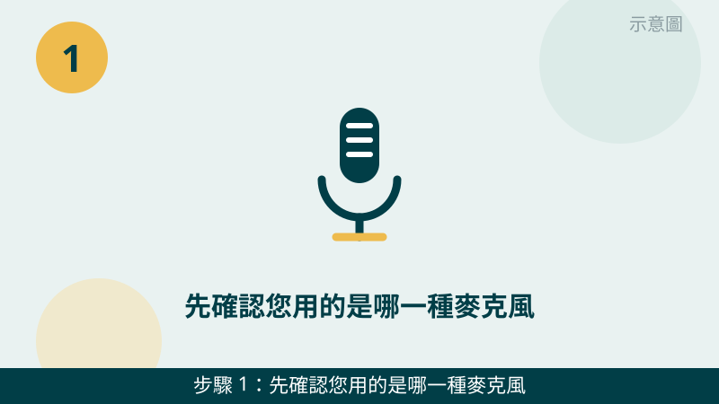
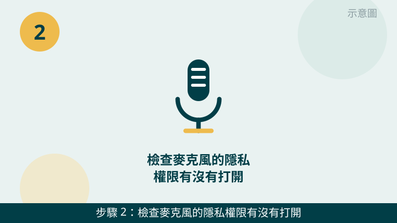
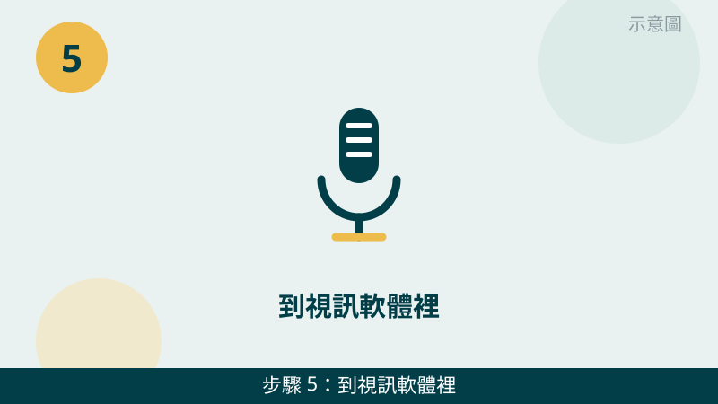

對方聽不到您的聲音，先不要急著買新的耳麥。麥克風沒聲音，最常見的是設定問題，不是硬體壞掉。而且「哪一種麥克風沒聲音」本身就是重要線索，檢查之前，請先確認您現在用的是哪一種。
開始之前先跟您說明分清的方法：筆電內接麥克風、桌機外接麥克風、外接耳麥，是三條不同的線路。如果內接麥克風有聲音、外接耳麥沒聲音，問題多半出在耳麥或插孔；如果每一種都沒聲音，就要往系統設定和驅動查。您先確認屬於哪一種，檢查時會更有方向。
麥克風的設定畫面先傳給我們看
把聲音設定的輸入裝置頁面、音量測試條拍下來傳 LINE，權限、裝置、音量哪一關卡住了，一看就知道往哪個方向查。先免費評估、報價透明，確認後再預約維修。
麥克風沒聲音自救檢查清單（由簡到難）
- 1. 先確認您用的是哪一種麥克風，再做一次最簡單的對照測試。請先看清楚：您現在說話用的是筆電內接麥克風、桌機外接麥克風，還是耳麥上的麥克風？接著換一種試試看，例如拔掉耳麥改用內接麥克風說話。怎麼判斷：換一種就有聲音，代表問題出在原本那支麥克風或插孔；每一種都沒聲音，再往系統設定查。

示意圖（非官方截圖） - 2. 檢查麥克風的隱私權限有沒有打開。請開啟 Windows「設定」→「隱私權與安全性」→「麥克風」，確認「讓應用程式存取您的麥克風」是開啟的，而且您要用的那個視訊軟體也在允許清單裡。怎麼判斷：權限沒開時，所有軟體都會同時沒聲音；只開了系統權限、沒開軟體權限時，會變成只有某個軟體沒聲音。

示意圖（非官方截圖） - 3. 確認預設輸入裝置選的是您正在用的那一個。請開啟「設定」→「系統」→「音效」→「輸入」，看下拉選單選到的是不是您現在用的麥克風。電腦常常會自動切到螢幕、攝影機或上一支耳麥的麥克風，您對著耳麥說話，它卻在收內接麥克風的聲音。怎麼判斷：對著麥克風說話時，「測試您的麥克風」那條音量條有沒有跟著跳動；選對裝置，音量條就會動。
示意圖（非官方截圖） - 4. 看音量與增益是不是被調到最小或靜音了。在同一個輸入裝置設定裡，點「裝置內容」或麥克風內容，確認音量不是 0、沒有被靜音；如果聲音很小聲、對方說聽不清楚，可以把「增益」或「麥克風加強」稍微調高一點點試試。怎麼判斷：音量條從完全不動變成會跳動，就是音量這一關；調太高會出現雜音與回音，調到對方聽得清楚又不會爆音就好。
示意圖（非官方截圖） - 5. 到視訊軟體裡，也要選對輸入裝置。請打開您開會用的視訊軟體，到它的音訊設定裡看「麥克風」選的是哪一個，改成您正在用的裝置，再看軟體裡的音量有沒有被靜音或調到最小。怎麼判斷：系統測試有聲音、視訊軟體沒聲音，幾乎都是軟體這裡選錯；而且每套軟體要分開設定，改完一套，另一套不會跟著改。

示意圖（非官方截圖） - 6. 檢查驅動：先重新插拔，再看裝置管理員有沒有驚嘆號。外接耳麥請先完整拔掉重插一次，確認插到底、插對孔（麥克風孔與耳機孔不要插反）。接著開啟「裝置管理員」→「音訊輸入及輸出」，看麥克風裝置旁邊有沒有黃色驚嘆號；如果有，請先拍照問我們，不要自己亂裝來路不明的驅動程式。怎麼判斷：重插就恢復，多半是接觸問題；一直有驚嘆號或裝置根本沒出現，就要往驅動或硬體方向查。
示意圖（非官方截圖）
出現這些情況，就別再自己試了
- 筆電內接麥克風完全沒聲音，而且懷疑是內部排線或零件問題——請不要自己拆筆電麥克風排線，排線很細、拆壞了反而更貴，請先拍照問我們
- 耳麥插孔鬆動、插進去會晃動，或插頭斷在孔裡面，不要用尖銳物品去挖
- 裝置管理員裡麥克風裝置消失、反覆出現又消失，或伴隨其他裝置一起異常
- 網路上教的「一鍵修復音效」「驅動萬能包」來路不明，不要隨便下載安裝，以免越修越糟
如果您的狀況是「對方聽得到、但聲音很小或雜音很大」，也可以先從第 4 步的增益、以及耳麥麥克風有沒有對準嘴巴、離嘴巴會不會太遠開始看。我們的檢測會把設定、驅動、麥克風與插孔一起交叉比對，找出真正的問題再報價給您。
常見問題
麥克風沒聲音，一定是麥克風壞了嗎？
不一定。麥克風沒聲音最常見的原因其實是設定問題：隱私權限沒開、預設輸入裝置選錯、或是音量被調到最小。先照本文 6 步檢查一輪，很多狀況整理完就恢復了；真的檢查完還是沒聲音，才需要進一步檢測是麥克風、耳麥還是主機板音效線路的問題。
視訊軟體裡聽不到我的聲音，但系統測試有聲音，是怎麼回事？
這通常是視訊軟體裡的輸入裝置選錯了。系統測試有聲音，代表麥克風本身是好的；請到視訊軟體的音訊設定裡，把麥克風改成您正在用的那一個裝置，再確認軟體裡的音量沒有被靜音。不同軟體要分開設定，改完一個軟體，另一個軟體不會跟著改。
麥克風的狀況拍照傳 LINE 就可以先判斷嗎？
可以先給方向。把聲音設定的輸入裝置頁面、音量測試條的反應、以及您用的是內接麥克風還是外接耳麥拍下來傳給我們，通常能先看出是設定問題還是硬體問題；要完全確認，還是需要實機檢測，這部分評估不收費，請放心傳。